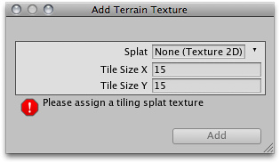

Textures
Decorate the landscape of your terrain by tiling Terrain Textures across the entire terrain. You can blend and combine Terrain Textures to make smooth transitions from one map to another, or to keep the surroundings varied.
Terrain Textures are also called splat maps. What this means is you can define several repeating high resolution textures and blend between them arbitrarily, using alpha maps which you paint directly onto the Terrain. Because the textures are not large compared to the size of the terrain, the distribution size of the Textures is very small.
Note: Using an amount of textures in a multiple of four provides the greatest benefit for performance and storage of the Terrain alpha maps.
To being working with textures, click on the Paint Textures button in the Inspector.
Adding a Terrain Texture
Before you can begin painting Terrain Textures, you will add at least one to the Terrain from your Project folder. Click the .

This will bring up the Add Terrain Texture dialog.

The Add Terrain Texture dialog
The Add Terrain Texture dialog
From here, select a tileable texture in the Splat property. You can either drag a texture to the property from the Project View, or choose one from the drop-down.
Now, set the Tile Size X and Tile Size Y properties. The larger the number, the larger each "tile" of the texture will be scaled. Textures with large Tile Sizes will be repeated fewer times across the entire Terrain. Smaller numbers will repeat the texture more often with smaller tiles.
In Unity 4, you can also assign a normal map texture. For the normal map to have any effect, the terrain must be using a normal map-capable shader; assign a material with normal mapped terrain shader in Terrain Settings tab.
Click the Button and you'll see your first Terrain Texture tile across the entire Terrain.

Repeat this process for as many Terrain Textures as you like.
Painting Terrain Textures
Once you've added at least two Terrain Textures, you can blend them together in various ways. This part gets really fun, so let's jump right to the good stuff.
Select the Terrain Texture you want to use. The currently selected Terrain Texture will be highlighted in blue.

Select the Brush you want to use. The currently selected Brush will be highlighted in blue.

Select the Brush Size, Opacity, and Target Strength.
Size refers to the width of the brush relative to your terrain grid squares
Opacity is the transparency or amount of texture applied for a given amount of time you paint
Target Strength is the maximum opacity you can reach by painting continuously.

Click and drag on the terrain to draw the Terrain Texture.

Use a variety of Textures, Brushes, Sizes, and Opacities to create a great variety of blended styles.

Note:When you have a brush selected, move your mouse over the Terrain in the Scene View and press . This will center the Scene View over the mouse pointer position and automatically zoom in to the Brush Size distance. This is the quickest & easiest way to navigate around your Terrain while creating it.
Page last updated: 2012-08-17